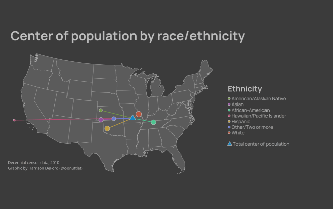

library(tidyverse)
library(tidycensus)
library(tigris)
library(sf)
library(tmap)
library(tmaptools)
library(showtext)
library(furrr)
library(data.table)
library(dtplyr)
options(tigris_use_cache = TRUE)
options(scipen = 999)
extrafont::loadfonts(device = "win", quiet = T)Center of Population by Ethnicity
personal
human geography
Introduction
Census data is a big part of what I do and what I’m interested in. Particularly, the Mean Center of Population is something that’s always intrigued me. Consolidating every person in the U.S. to one point is perhaps the peak of descriptive statistics: squishing all of the countless personalities, names, and relationships that make up the nation into a singular point located near the unassuming town of Hartville, Missouri. In fact, if you asked Americans what they think of as the “center of America,” I’d wager many guesses wouldn’t be too far from there.
Obviously, though, that isn’t everyone’s center of the country. There are myriad ways to slice a population; only some of which are captured in the Census: age, gender, income, marital status, race and ethnicity – just to name a few. However, the latter of these categories is often the one which defines a person’s experience in the U.S., for better or for worse – and these experiences often start with the distribution of a group across space.
Whether discussing the enslavement of African American communities, largely in the Southeast; the immigration of Hispanic families, many of whom end up in Texas, California, Arizona, and New Mexico; or the “Manifest Destiny” of the White man moving westward – all of these happened somewhere, and impact the distribution of descendants today.
This project seeks to investigate and elaborate on artifacts of these histories by investigating the Mean Center of Population, split out by summarized race and ethnicity categories collected in the decennial Census. Though this example will only focus on one survey question, this methodology can easily be applied to any of the other ways the Census Bureau stratifies the American population, across any smaller geography.
Methods
Luckily, the Census Bureau is quite transparent with the methods used to calculate the Mean Center: there’s a whole PDF explaining the method from start to finish, including changes over time. The information is dense, so here’s the important stuff.
From 1960 onward, the formula by which the Mean Center is calculated is as follows:
\[ \bar{\phi} = \frac{\Sigma(w_i\phi_i)}{\Sigma w_i} \]
where \(\bar{\phi}\) is equal to the mean latitude of population
\[ \bar{\lambda}=\frac{\Sigma w_i\lambda_i cos(\phi_i(\frac{\pi}{180}))}{\Sigma w_i cos(\phi_i(\frac{\pi}{180}))} \]
and \(\bar{\lambda}\) is the mean longitude.
\(\phi_i\), \(\lambda_i\), and \(w_i\) are the individual latitude, longitude, and weight (in this case, population) of each of the small units used in computation, respectively.
Now that the mathematical basis for our computations has been established, analysis can begin. Here are the packages we’ll need, and some handy options:
Parallelization
Operating on Census blocks nationally is no small feat. There are over 11,000,000 blocks; multiply that by 8 population categories and we’re operating on nearly 90 million rows! Thus, parallelization is a must-use in this situation.
fips_list <- unique(fips_codes$state)[1:51] # create list to apply over
num_cores <- availableCores()-1 # keep one core free while running to avoid crashes
plan(multisession, workers = num_cores)Population groupings
The variable codes of interest can change as different summary files are released, but the population categories should be identical across decades. As this analysis was completed before the 2020 Census tabulation was completed, the preliminary redistricting information was used for population counts, as shown below:
# use PL 94-171 data for recent vintages
pop_vars <- c(white = "P2_005N",
black = "P2_006N",
aian = "P2_007N",
asian = "P2_008N",
hipi = "P2_009N",
other = "P2_010N",
two_p = "P2_011N",
hisp = "P2_002N")The groupings I’m using here are tabulated below:
| Group | Variable | Census Sub-groups |
|---|---|---|
| Hispanic | P2_002N | “Hispanic or Latino” |
| NH White | P2_005N | “Not Hispanic or Latino; White alone” |
| NH African-American | P2_006N | “Not Hispanic or Latino; Black or African-American alone” |
| NH American and Alaskan Native | P2_007N | “Not Hispanic or Latino; American Indian and Alaska Native alone” |
| NH Asian | P2_008N | “Not Hispanic or Latino; Asian alone” |
| NH Hawaiian and Pacific Islander | P2_009N | “Not Hispanic or Latino; Native Hawaiian and Other Pacific Islander alone” |
| NH Other + NH Two or more | P2_010N + P2_011N | “Not Hispanic or Latino; Some Other Race alone” + “Not Hispanic or Latino; Two or more races” |
Data collection
Now, things start to get real. This looks tricky, but isn’t too hard to understand once you get past the density of it:
b <- reduce(future_map(fips_list, function(x){
get_decennial(geography = "block",
variables = pop_vars,
year = yr,
state = x,
output = "tidy",
geometry = FALSE)}, .progress = TRUE), rbind)
c <- reduce(future_map(fips_list, function(x){blocks(state = x, year = yr) %>%
st_drop_geometry() %>%
mutate(across(.cols = starts_with("INTPTLON"), .fns = as.numeric, .names = "lon")) %>%
mutate(across(.cols = starts_with("INTPTLAT"), .fns = as.numeric, .names = "lat")) %>%
select(c(5,last_col(offset = 1), last_col()))}, .progress = TRUE), rbind)
future:::ClusterRegistry("stop")
fwrite(as.data.table(b), paste0("../data/pop_data_2020.csv"))
fwrite(as.data.table(c), paste0("../data/latlon_2020.csv"))- Iterate
get_decennialover each of our states infips_list, usingfuture_map()to take advantage of multiple CPU cores- Collect population data for each of our
pop_varsdefined earlier, and keep the data in tidy format for grouping and summarization
- Collect population data for each of our
reduce()the resulting set of dataframes into one long dataframe usingrbindas the.fargument- Iterate
blocks()over each of our states infips_list, again usingfuture_map() - Clean up the internal point coordinates with
as.numeric(), and select only the important columns - Again,
reduce()the set of dataframes into one, with an eighth as many rows asb.
Finally, we can stop our cluster and write the two objects to disk, using data.table’s fwrite(). These can be read for subsequent analyses, or chunked to avoid memory issues in the computation steps.
Computation
Now, we need to join our tables in order to weight the internal point of each block with its respective population. Note the usage of {dtplyr} here: it allows us to keep writing in tidyverse syntax while gaining the performance of {data.table}.
Since block-level population centers aren’t available through {tigris}, we will use the “internal point” latitude and longitude. The internal point of a geography is often the centroid: if a geography is shaped such that the centroid would fall outside its boundary, the internal point is placed as close to the internal centroid of the geography as possible, preferably on land. We’ll be using the formulas from earlier, after translating them from mathematician to R.
b <- lazy_dt(fread(paste0("../data/pop_data_", yr, ".csv")))
c <- lazy_dt(fread(paste0("../data/latlon_", yr, ".csv")))
o <- b %>%
pivot_wider(names_from = variable, values_from = value) %>%
mutate(other = other + two_p) %>%
select(-c(two_p)) %>%
pivot_longer(cols = 3:9, names_to = "variable")
j <- left_join(o, c, by = c("GEOID" = paste0("GEOID", str_sub(yr, 3,4)))) %>%
mutate(elat = value * lat,
elon = value * lon * cos(lat * (pi/180)),
denom = value*cos(lat * (pi/180)))
g <- j %>%
group_by(variable) %>%
summarize(tlat = sum(elat, na.rm = TRUE)/sum(value, na.rm = TRUE),
tlon = sum(elon, na.rm = TRUE)/sum(denom, na.rm = TRUE),
pop = sum(value))
cc <- as.data.table(j) %>%
summarize(tlat = sum(elat, na.rm = TRUE)/sum(value, na.rm = TRUE),
tlon = sum(elon, na.rm = TRUE)/sum(denom, na.rm = TRUE),
pop = sum(value))
g <- as.data.table(g)I chose to read b and c back in from disk, so that I could skip querying the Census API in the future. If you still have b and c in your environment, and have enough memory to continue to use them, that’s also an option. Otherwise, you’ll have to get creative with chunking your files on disc to allow for smaller object sizes in memory. Note that because of how the Mean Center formula is written, it can nest again and again – one way to do this with less memory could be to compute the center of each state at a time, then aggregate those into regions, then aggregate those to the national level. Luckily for me, 32GB of RAM was just about enough to hold all of the objects in-memory.
This code chunk, thanks to the magic of dtplyr, is a bit easier to read than the previous, while allowing the performance gains of data.table and the readability of dplyr. The steps are, generally, as follows:
- Pivot
bwider so that each population group has its own column, and sumotherandtwo_p, then droptwo_p, and pivot longer again to createo - Join
oandcby their GEOIDs, then calculate their individual components of weight to createj - Group
jby each category variable, then summarize totlatandtlon(total mean lat and long, respectively) - create
ccbased onj, but without grouping by variables. This should yield the total Mean Center of Population - Coerce
gto adata.table, which computes the steps on thelazy_dtobject and creates a memory object
These two objects, g and cc, contain the coordinates of the Mean Center of Population for each ethnicity category we’ve defined. Now, there’s only one thing left to do before we can map them – we need to make them into sf objects.
Creating spatial data
s <- g %>%
st_as_sf(coords = c("tlon","tlat")) %>% st_set_crs(4326) %>% st_transform(6350)
cc <- cc %>%
st_as_sf(coords = c("tlon", "tlat")) %>% st_set_crs(4326) %>% st_transform(6350)
lso <- vector(mode = 'list', length = nrow(s))
for (row in 1:nrow(s)){
cs <- data.frame(st_coordinates(cc)[1], st_coordinates(cc)[2]) %>%
rename(p_x = 1,
p_y = 2) %>%
mutate(seq = 1)
cs <- cbind(g[,c(1,4)],cs)
ss <- s[row,] %>%
rowwise() %>%
mutate(p_x = unlist(geometry)[1],
p_y = unlist(geometry)[2]) %>%
mutate(seq = 2) %>%
st_drop_geometry() %>%
ungroup()
ap <- rbind(ss,cs[row,]) %>%
arrange(variable, seq)
m <- as.matrix(ap[order(ap$seq),
c("p_x","p_y")])
ls <- st_linestring(m) %>%
st_sfc() %>%
st_sf() %>%
mutate(variable = ap$variable[1],
pop = ap$pop[1]) %>%
bind_cols()
lso <- lso %>% bind_rows(ls)
}
lsp <- lso %>% st_set_crs(6350)I really wanted to have lines connecting each of my points (in g) to the total Mean Center of Population (cc). To do so, I had to create a LINESTRING for each point, with the start point being at cc and the endpoint being at each point in g. After converting g to an sf object (s), I created a list the same length as s. By creating an empty object with the same length as the object I’m iterating over, I remove all headroom R needs to allocate more space to the incoming objects. Josiah Parry has an awesome YouTube video discussing this topic, for those who think looping is slow in R (like I used to!).
Plotting
Finally, it’s time to plot our information. Now that everything is an sf object, this is pretty trivial – I chose tmap for my plotting, but you could just as easily use ggplot2 for static maps, or, if you prefer interactive, mapgl or mapview.
I chose to symbolize my points by color, representing a population group; and by size, representing the population of that group. However, the values for the minimum population and the maximum population are really far apart! The points barely show up on the low end. So, first, I’ll scale the population values in s to reduce the magnitude of the difference between the most- and least-populous groups.
s <- s %>% mutate(pop_pct = pop/sum(pop),
log_pct = abs(log(pop_pct)),
normalized_log_pct = 0.1 + (log_pct - max(log_pct)) / (min(log_pct) - max(log_pct)) * (0.7 - 0.1))Let’s put it on a map!
ilh <- palette(c(rgb(114,153,67, maxColorValue = 255),
rgb(148,79,161, maxColorValue = 255),
rgb(76,196,144, maxColorValue = 255),
rgb(185,74,115, maxColorValue = 255),
rgb(193,158,60, maxColorValue = 255),
rgb(104,123,210, maxColorValue = 255),
rgb(185,85,61, maxColorValue = 255)))
plot_fips <- unique(fips_codes$state_code)[1:51]
plot_fips <- plot_fips[!plot_fips %in% c("02", "15", "72", "78")]
us <- states(cb = TRUE, year = yr) %>% filter(if (yr == 2010) STATE %in% plot_fips else
STATEFP %in% plot_fips) %>%
st_transform(6350) #weird artifact in tigris means that column names don't match
t <- tm_shape(us, bbox = bb(us, ext = 1.1))+
tm_polygons(border.col = "#aaaaaa", lwd = 0.75, col = "#5b5b5b")+
tm_shape(lsp)+
tm_lines(col = "variable", palette = ilh, legend.col.show = FALSE, lwd = 1.5, legend.lwd.show = FALSE)+
tm_shape(s)+
tm_symbols(col = "variable", title.col = "Race/Ethnicity", size = "normalized_log_pct", border.col = "#bdbdbd", palette = ilh, border.lwd = 1, legend.col.show = FALSE, legend.size.show = FALSE)+
tm_shape(cc)+
tm_dots(col = "#1286c4", shape = 24, title = "Total center of population", size = 0.6, legend.show = FALSE, border.lwd = 1, border.col = "#bdbdbd")+
tm_add_legend(type = "symbol",
labels = c("American/Alaskan Native", "Asian", "African-American", "Hawaiian/Pacific Islander", "Hispanic", "Other/Two or more", "White"),
col = ilh,
border.col = "#bdbdbd",
title = "Ethnicity",
size = 0.4)+
tm_add_legend(type = "symbol",
shape = 24,
col = "#1286c4",
size = 0.6,
border.col = "#bdbdbd",
labels = "Total center of population")+
tm_layout(main.title = "Center of population by race/ethnicity",
main.title.fontfamily = "Manrope",
main.title.fontface = 2,
main.title.size = 2,
bg.color = "#3b3b3b",
legend.outside = TRUE,
legend.text.color = "#bdbdbd",
legend.text.fontfamily = "Manrope",
legend.title.color = "#bdbdbd",
legend.title.fontface = 2,
legend.title.size = 1.5,
legend.title.fontfamily = "Manrope",
legend.text.size = 0.75,
legend.position = c(0,0.25),
outer.bg.color = "#3b3b3b",
frame = FALSE,
main.title.color = "#bdbdbd")+
tm_credits(paste0("Decennial census data, ", yr, "\nGraphic by Harrison DeFord (@oonuttlet)"),
position = c(0,0.08),
col = "#bdbdbd",
fontfamily = "Open Sans",
size = 0.62)
t
if (!file.exists(paste0("../bin/center_of_pop_natl_",yr,"_intpt.png"))){
tmap_save(t, paste0("../bin/center_of_pop_natl_",yr,"_intpt.png"), dpi = 1200)
}Discussion
The completed map is visible below. Some trends are immediately apparent: the African-American point is dragged to the southeast, and the Hawaiian/Pacific Islander point is in the Pacific. I invite you to look over the map and think about how the historic distribution of these populations could shape their modern-day Mean Center of Population.

Finally, I’d like to investigate the change in Mean Centers from 2010-2020. I’ve computed this analysis only for 2010 and 2020, though in theory, it would be trivial to calculate for earlier years (at least since 1960). The gif shown below demonstrates the shift in Mean Centers between 2010 and 2020. Much of the shift is probably systemic shifts – 2020 was the first year in which the decennial census was administered mostly online. Again, I invite you to think about what other variables might be leading to the shift between decades. Of note: COVID-19 didn’t impact the U.S. until around March 12, 2020 – the Census Bureau aims to count every person on or around April 1 of the given vintage. Thus, COVID-19 may have affected the Census response rates, but is unlikely to have had an impact on net gain or loss of a given area that recently after its first impacts in the U.S.
